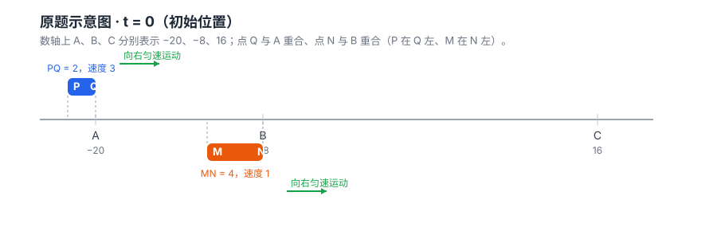

这一页记录 《数轴动线段 · 动画讲解》 是怎么做出来的：原始提示词、原始题目图片、用到的工具与关键步骤。
用户在一张题目截图后，给出的唯一一句指令（图片以 @image 形式粘贴进对话）：
@image#1:Clipboard_Screenshot.png 将这个题目做成网页动画，详细讲解
后续本页本身的指令：“将这个网页是如何产生的，添加到 /Users/tango/Code/static_tools 网站，并 push 修改。包含使用的工具，和图片以及提示词。”
原始截图是聊天里直接粘贴的，未落盘保存；下图依据动画页中已验证的运动模型重建（参数与题目完全一致）。

数值验证 · Node.js 脚本
用本环境 managed Node 22.22.2 跑极小步长（dt=1e-5）的数值积分，模拟两条线段的运动；再用二分法精确求解 CQ=PM 与 L=1.5 的时刻，逐项复核答案。过程中还纠正了最初手算“第二段重合”时的一个误差。
动画与讲解 · 单文件 HTML + Canvas
零依赖单文件页面：数轴双轨场景（PQ 蓝 / MN 橙）、重合部分红色高亮、CQ/PM 尺寸线、端点坐标标签；另绘重合长度 L(t) 曲线；含逐问分段讨论详解、关键时刻一键跳转、原题/变式双模式、播放与拖动时间轴。
浏览器真实自测 · static-page-browser-verify
调用本机 Chromium + CDP（WebSocket，零第三方依赖）编写断言脚本，覆盖 canvas 绘制、各关键时刻数值、答案按钮联动、窄屏无溢出、窗口缩放后不空白等 36 项，全部通过。
站点接入与部署 · static_tools + Git
按仓库规范接入——独立文件夹 + 根 index.html 导航卡（图标「轴」）+ README 目录树与预览地址更新；git 小粒度提交并 push 到 GitHub（Cloudflare Pages 自动部署）。
生成主体 · WorkBuddy
上述读题建模、写验证脚本、构建动画、浏览器自测、接入仓库与提交推送，均由 WorkBuddy 在对话中完成。
L(t) 曲线，写逐问分段详解，加入原题 / 第(3)问变式双模式与关键时刻跳转。number-line-animation/ 文件夹，更新根导航与 README，提交并 push，Cloudflare Pages 自动部署。最终三问答案：(1) M=8，Q=−8 (2) M=−2.8 或 2 (3) t=5.5, 8.5, 18.25, 19.75
▶ 查看成品动画讲解本页与成品动画同属 static_tools 站点 · 纯静态、零依赖